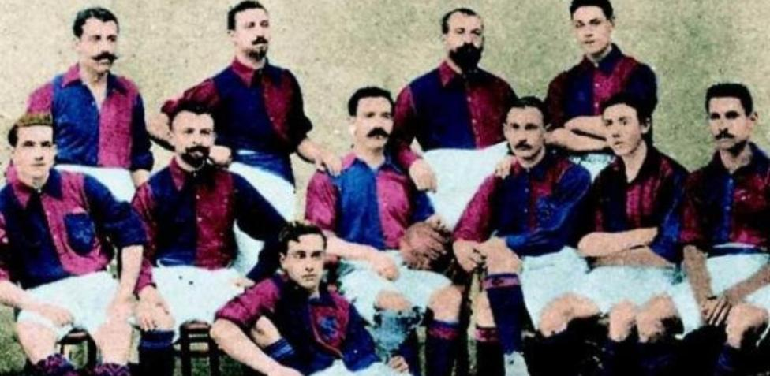
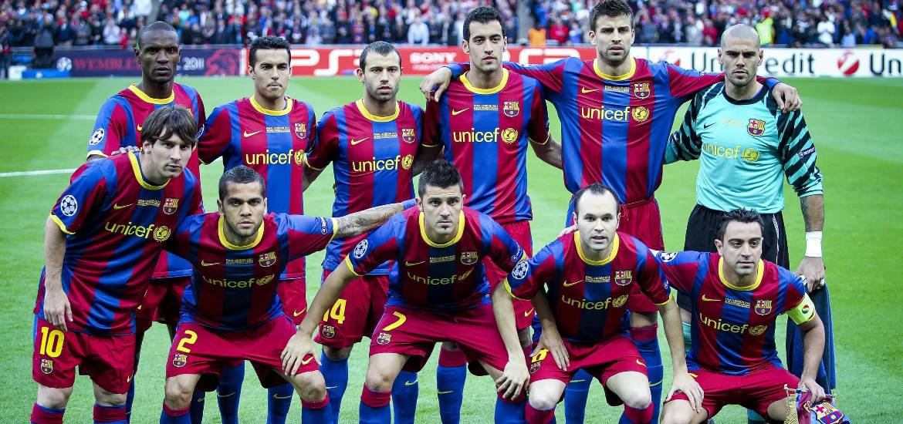

El FC Barcelona fue fundado el 29 de noviembre de 1899 por un grupo de futbolistas liderados por Joan Gamper. Desde sus inicios, el club se convirtió en un símbolo de la identidad catalana, adoptando los colores azul y grana.
Durante los años 2000, bajo la dirección de entrenadores como Pep Guardiola, el FC Barcelona vivió una de sus etapas más exitosas, ganando múltiples títulos de La Liga, Champions League y otros trofeos, con un estilo de juego basado en el "tiki-taka".
Más allá del fútbol, el FC Barcelona es un emblema de la cultura catalana. Su lema "Més que un club" refleja su compromiso con valores sociales y culturales, siendo un punto de unión para millones de aficionados en todo el mundo.